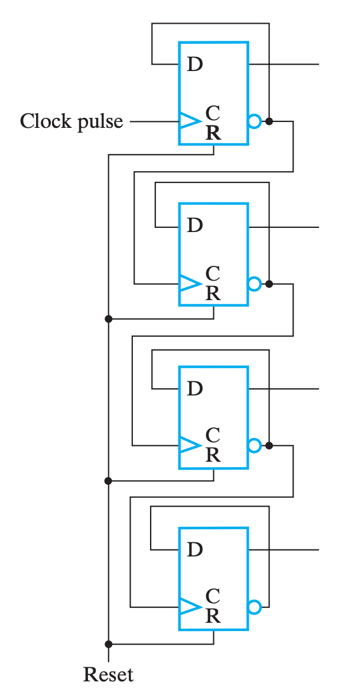
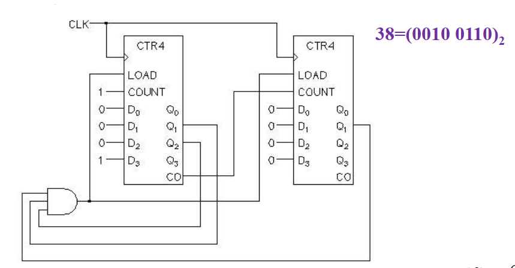

Chapter 6 Registers and Register Transfers¶
约 1138 个字 预计阅读时间 6 分钟
Part 1 ： Registers, Microoperations and Implementations¶
Register 寄存器¶
- 一个寄存器既能存储值(store)又能读取新的值(load)
- 要同时实现这两个功能，我们使用变量
load来控制寄存器选择store还是load的行为- load = 1 : load the values on the data inputs
- load = 0 : Store the values in the register
可行的方法之一是将Enable信号由 \(Clock\) 变为 \(\overline{load}+clock\) ，这样当 load = 0 时，使能信号时钟为1，使得触发器中的slave锁存器无法写入数据，达到 store 的功能。

Clock Skew
然而这个方案存在缺陷，在同步时序电路中，由于clock信号由整个电路共用，如果直接把load与clock以某种方式相连的话，clock到达该电路(或者其它电路)就会有不可避免的传播延迟，即时钟偏移(clock skew)。
- 理解Clock Skew后，我们可以转而采取另一种方案：通过load来选择触发器的输入是当前的input还是当前的output

Register Transfer Operations¶
- Elementary Operations: load, count, shift, add, bitwise "OR", etc.
- Elementary operations called microoperations
- Register Transfer Language 缩写 RTL
常见RTL


RTL例题


Register Transfer Structure¶
Multiplexer-Based Transfers 基于MUX实现传输¶
对于一个单一寄存器，它的输入可能有多种来源，例如其它寄存器，又或者是其他操作的结果。总而言之，它的输入很可能是不唯一的，而同一时刻我们只能接受一个来源的输入。因此，我们需要使用 MUX 来对输入进行选择。 -修佬

一组Register互相之间有输入的情况

Multiplexer Bus 基于MUX总线实现传输¶
上述实现要求每个Register都有其对应的MUX，这将大大增加电路的开销。因此我们不妨试想一个所有Register连接到一条线路的情况，这条线路也被称为总线(bus)
接下来进行对比，以总线实现为主体，与 MUX 实现对比：
- 优势：
- 电路更精简，成本更低，随着寄存器增加这个特点更加明显；
- 劣势：
- 同一时刻内总线只能传输一个数据，即只有一个数据源(source)；
- 同一时钟周期内只有一个数据能传输到别的地方，例如交换操作就需要至少两个时钟才能实现；
- 同一时刻内总线只能传输一个数据，即只有一个数据源(source)；
而因为这些特点，我们需要评估我们的需求，选择合适的结构来实现。
Mutiplexer Bus 共用MUX¶

上图将所有Register存储的值接入一个共用的MUX中，通过 \(S_1、 S_0\) 控制输出哪组值，再通过寄存器各自的load控制是否输入到该寄存器中
Three-State Bus¶

三态门输出高阻，很适合当bus
Microoperations 实现¶
Add and Substract 加减法¶

Note
正如见面几章所学过的，还可以通过加减法器做到很多功能

Logic 逻辑运算¶
Wow，so simply!

Shift 移位运算¶

- 上图Serial指串行输入，每过一个时钟周期，上一个寄存器的值会转移到下一个寄存器
- input(\(D_{1,2,3,4}\))指并行输入，上图电路同时支持串行输入和并行输入，可以通过Shift和load加以控制
| Shift | Load | Operation |
|---|---|---|
| 0 | 0 | No Change |
| 0 | 1 | Load input |
| 1 | X | Shift Down |

此外，通过在每个Flipflop前都加一个MUX，可以实现双向移位（简单易懂耶）
Counter 计数器¶
- Asynchronous Counter (Ripple Counter)
- Slower
- Simple
- Cost is low
- Synchronous Counter
- Faster
- Complex
- Cost is high
Ripple Counter 行波计数器¶
也是数字逻辑设计这门课程唯一一个异步时序电路

Easy to understand!
Synchronous Counter 同步计数器¶

多出来的Carry out不要丢掉，可以用来组合成容量更大的计数器！

余N计数器¶
通过将Counter的最大输出的与门作为的Load信号传回Counter，实现每次计数到N-1时重置计数

Tip
上图是一个余7计数器，因为每次Q为 0110 (6) 时，将0读入
More Example
 Synchronously Load 8 on Terminal Count 38